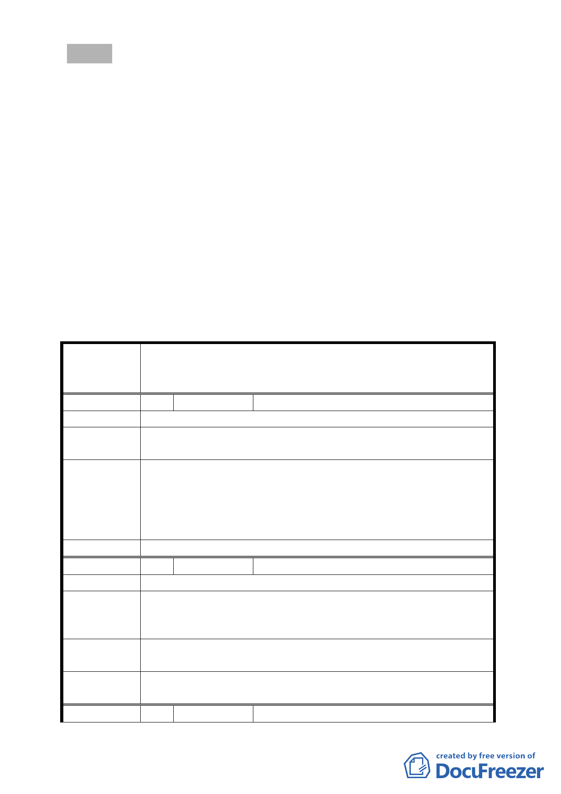

決議：
一、 本案第一期開發基地（文山區華興段一小段318、582、669、
669-1、及670地號等5筆土地）變更第三種住宅區、市場用地
及停車場用地為第三種住宅區（特）先予通過，建蔽率維持
45％，容積率最高450％，其餘土地使用項目、建築高度比、
前後院深度比、側院寬度、鄰幢間隔等悉依「臺北市土地使
用分區管制自治條例」第三種住宅區規定，案名併同修正。
二、 其餘地區為使計畫更斟完善以及減少後續執行疑義，請都市
發展局補充公共設施之承載量及交通衝擊分析、全區都市設
計準則、整體開發計畫，並考量周圍街區共同開發的可行性
後，再提會審議。
三、 公民或團體所提意見審決如後附綜理表。
臺北市都市計畫委員會公民或團體所提意見綜理表
變更臺北市文山區華興段一小段 253 地號等第一種商業區
案 名 （特）、第三種住宅區、市場用地及停車場用地為第一種商業
區（特）及第三種住宅區（特）細部計畫案
編 號 1 陳情人 張斌賢 君
建 議 位 置 文山區華興段一小段 320 地號
陳情理由
320 地號原為 D 基地 318 地號之法定空地，是否研議納入 D
基地開發。
一、 查本案D基地將來之開發建築範圍不含括320地號，故
都市發展局
建議
其法定空地檢討亦不涉及320地號。
二、 另320地號未位於本計畫範圍內，現況亦遭佔用，且未
來320地號之開發可與鄰近土地一併辦理都市更新等
事宜，故建議320地號不再納入本計畫範圍。
委員會決議 依都市發展局建議辦理，不納入本計畫範圍。
編 號 2 陳情人 張斌賢 君
建 議 位 置 文山區華興段一小段 409、407 地號
D 基地旁邊未開闢計劃道 407 地號，是否在本次開發時，協
陳 情 理 由 助開闢，因本計畫道路已規劃 30 年，社區居民進出道路僅
378 巷不敷使用。
都市發展局 一、 查407地號並未位於本次計畫範圍內。
建 議 二、 本案建議由本府採行政程序協助處理。
委員會決議
陳情事項非屬審議範疇，採都市發展局建議由市府依行政程
序協助處理。
編 號 3 陳情人 文山區明義里 高德四里長等 22 人
-5-